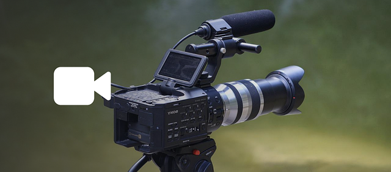

Video is an electronic medium for the recording, copying, playback,
broadcasting, and display of moving visual media. Video was first developed for mechanical television systems,
which were quickly replaced by cathode-ray tube (CRT) systems which, in turn,
were replaced by flat panel displays of several types.
Are you looking for advice on videos or do you have a question regarding this topic?